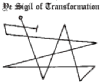

|
e Ritual of Dho-Hna

Trace ye Angle-Web with ye Scimitar of Barzai and offer the mystic suffumigations with the incense of Zkauba. Enter ye Web by the Gate of the North and reciting the incantation of Na (thus):
Proceed to ye South-most Pinnacle by the Path of Alpha whereupon make ye, ye Sign of Kish, pronouncing the triple-Word of power thrice, (thus so):
Proceed thence to ye Angle of the North-East chanting the third verse of ye Fifth Psalm of Nyarla- thotep seglecting not to make the quintuple genuflection on passing through ye curve locus-(thus):
The All-One dwelleth in Darkness,  Pause at the Third Angle and make ye once more the Sign of Kish speaking the words that clear the portal and stay the course of time: ABYssus-D|AcoNrsus, ZEXOWE-AZATHOTH!) NRRGO, IAA! NYAR-LATHOTEP! Follow the Third Path to the Pinnacle of the West and there perform the obeisances in silence (bow low thrice and give the gesture of Voor). Turn and tread the Path of Transfiguration leading to ye Ultimate Angle. Open up the Abyss Gate by the ninefold affirmation (thus):
HEECHO! YOG-SOTHOTH! YOG-SOTHOTH! YOG-SOTHOTH! Make ye the Sigil of Transformation and step thou forth into ye Gulf. |
 Of
the Old Ones and Earth Magick > Of
the Old Ones and Earth Magick > |
Table of
Contents  |